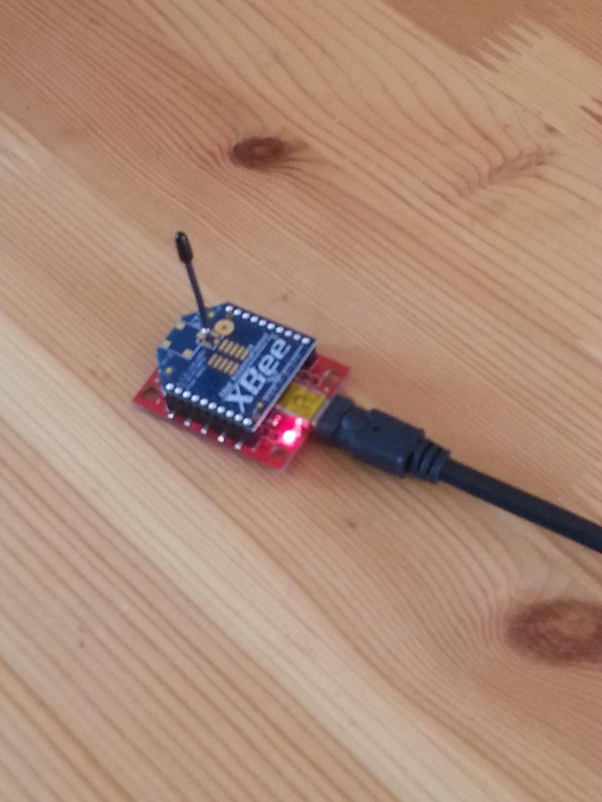
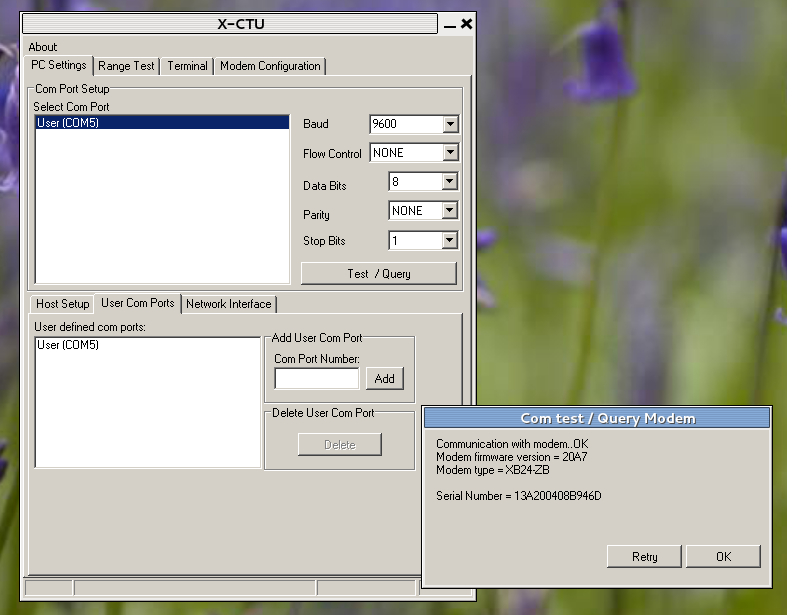
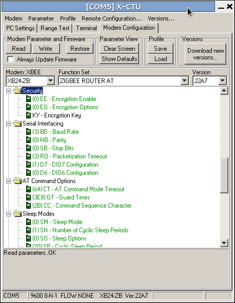
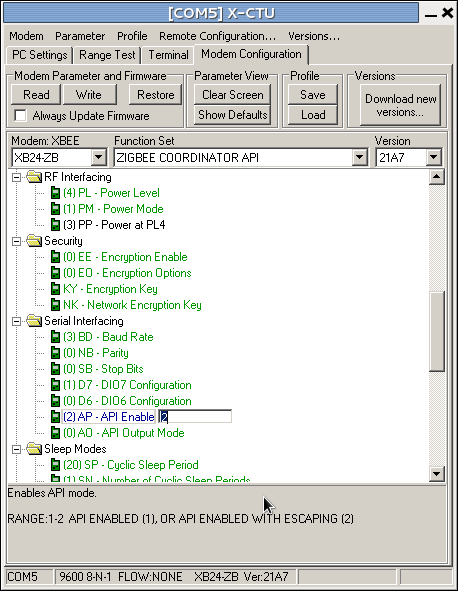

Posts about firmware
XBee firmware management with X-CTU
Managing Digi's XBee radio modules requires using their X-CTU package to upload the correct firmware. In this post we explain how.
This post is slightly depressing: not because it's on an unhappy topic, but because the effort and software needed to manage XBee radios is so complex to set up. In many ways this is just a function of the good design of the XBee: it's so minimal in terms of footprint and power consumption at run-time that it offloads a lot of work to external tools (and the user) at system build-time. But it's still a lot of work to get such a small piece of kit running.
X-CTU is intended to upload firmware to XBee radio modules. This is needed to change the firmware between router and co-ordinator of the Zigbee mesh network, and between the different protocol variants that the XBee radios can support.

One limitation of X-CTU is that it only works on Windows: if you're running Linux, X-CTU will run under Wine. You can download the latest X-CTU from Digi's X-CTU page; alternatively, there's a version installed on the Citizen Sensing VM.
To use X-CTU you need to connect your XBee module to your computer. The easiest way to do this is using an XBee USB breakout board, which provides an XBee socket and a USB socket. Insert the radio into the board, plug in a USB cable, and plug the other end into a USB socket. The light on the breakout board will then come on (see photograph above).

You next need to start up X-CTU and tell it where the XBee is. It hangs off a Windows COM port, and X-CTU will typically find it automatically. You should then be able to press the "Test/Query" button, and X-CTU will interrogate the XBee and display a small window showing some information about it, as shown in the screenshot on the right: the details don't matter, but this shows that the XBee is talking to the computer properly.

Assuming everything is now working correctly, the next step is to decide what firmware to download to the radio. Click on the "Modem configuration" tab, and then click the "Read" button: this reads the firmware that's on the XBee at the moment, and puts the details into the window. Typically this results in a display like that shown on the left. The important things to notice are the two drop-down boxes labelled "Function Set" and "Version". The function set is the description of the firmware, in which case indicating that the XBee is running Zigbee router firmware that responds to AT commands (more on this below).

To download a new firmware, we then select the function set and version we want to use. Suppose we want to make this XBee into the mesh co-ordinator. We change the function set to "Zigbee Coordinator AT" (keeping with Zigbee and the AT command set) in "Function set" the drop-down, then select the most recent version of this function set from the "Version" drop-down. (Versions are identified by hex numbers: the most recent in the screenshot right is "20A7", that being the highest hex number. Unfortunately X-CTU orders the numbers alphabetically, not in hex-numeric order.) Pressing "Write" will update the radio's firmware, and the radio is then ready for use as a co-ordinator.
If you look through the list of function sets, there will be quite a few options, including protocols other than Zigbee. These probably aren't worth too much exploration, but you'll also notice that there are Zigbee AT and API function sets corresponding to the two modes (transparent and API) that the XBee can support. Be sure to select the correct one for your application.
That's it: the radio is now ready for use.
Advanced use: setting optional parameters
There's one more thing that X-CTU can be used for: it can set parameters to the firmware function set, and this is sometimes important when using the radios.
When you've read the firmware from a radio, the main part of the X-CTU window contains a hierarchy of folders and cryptic values, for example "(4) PL - Power level". These are parameters that can be changed to modify the detailed behaviour of the radio. Some can also be set using AT commands. The example we used sets the radio's power level to 4. If you click on this, it will show a drop-down box giving other options. You might, for some applications, choose to reduce the radio power to 1 ("low") to save batteries. If you choose this and then write the firmware to the radio, the module will use this power setting.
In the example shown on the left, we're changing the AP parameter ("API enable") to 2, which is needed for the xbee-arduino library to work properly. If we now write the firmware (with the Zigbee co-ordinator API function set selected as shown), the radio will be ready for use.